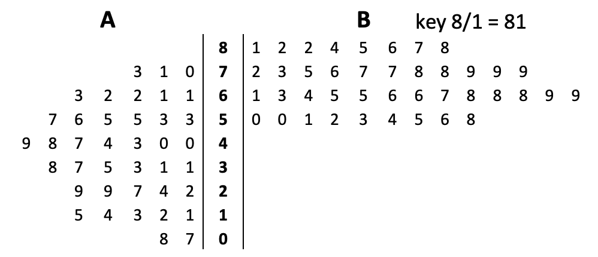

Representing Data
Stem and Leaf Diagrams
Line up the digits as leaves on the branches so that it looks like a bar chart.
The leaves on each branch must be in numerical order, starting from the stem.
Add a key: e.g: 5|2 means 52, 4|3 means 4*3 etc.
